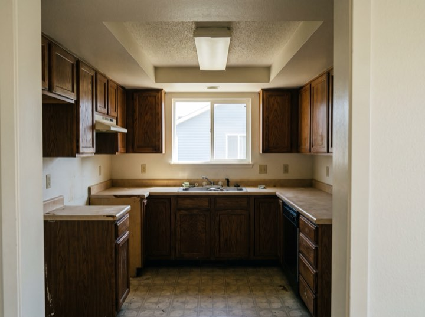
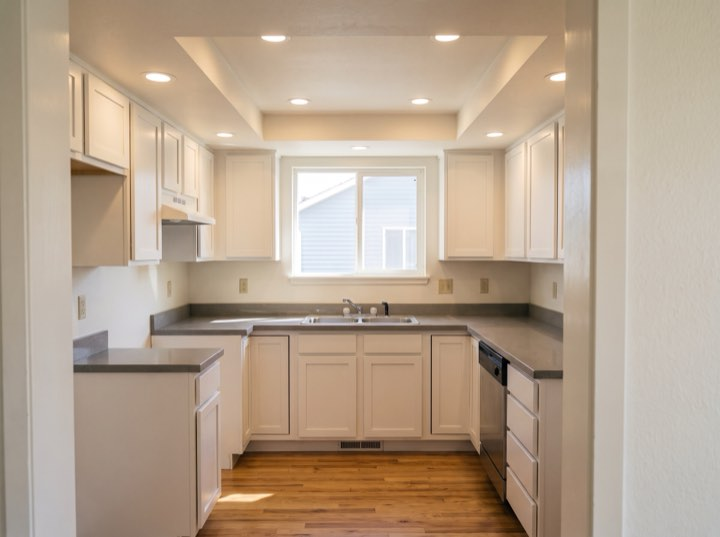
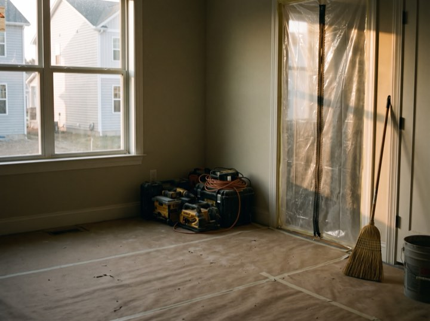
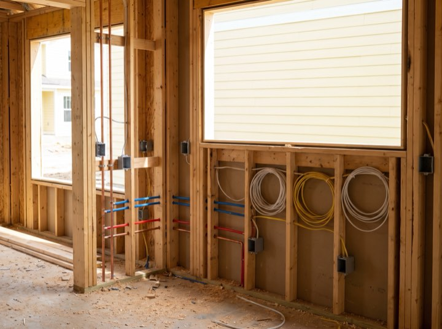
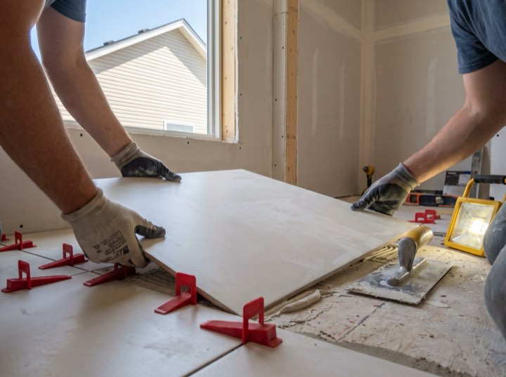

Consultation & feasibility
We visit, listen, and tell you whether the idea works and roughly what it costs. Free, and sometimes the answer is don't.
Whole-home renovation & additions
Whole-home renovations, additions and structural work, typically from $75,000. You get a dated site diary with photographs every working day, so you can follow the job from your desk without ringing anybody.
Services
We take on fewer projects than we could, because running four properly beats running nine badly.
Gut renovations and reconfigurations. Structural, mechanical and finish work under one contract and one project manager.
Second storeys, rear extensions and garage conversions, including the survey, engineering and permitting.
Usually where a bigger project starts. We'll tell you honestly whether it makes sense to do them alone or as part of something larger.
Load-bearing changes, foundation work and the permit process. This is the part that derails projects run by others.
Results
Weekly update email every Friday without fail. I never had to chase.Nathan V. · Rear extension
They talked us out of a bigger job we didn't need. That's why we trusted the rest.Sophie A. · Kitchen & structural
Permits handled entirely. I never spoke to the city once.Darren K. · Second storey
Site was swept every single evening. Small thing, huge difference.Bea M. · Gut renovation
Process
Homeowners aren't anxious about the money so much as about the silence. So we removed the silence.
We visit, listen, and tell you whether the idea works and roughly what it costs. Free, and sometimes the answer is don't.
Drawings, engineering where needed, and a line-item proposal. One number, with allowances stated openly.
We handle the city. You get a week-by-week schedule before anyone swings a hammer.
A named project manager, a daily photo diary, and a written summary every Friday, none of which you have to ask for.
From the site diary
Floors protected, walls open, inspection passed, tile set. The same day-by-day record every client gets, so nobody wonders what happened on Tuesday.





That's the right time to call. Our calendar fills six to nine months out, and the design and permit stage takes longer than people expect.
Free consultations. Projects typically start at $75,000.